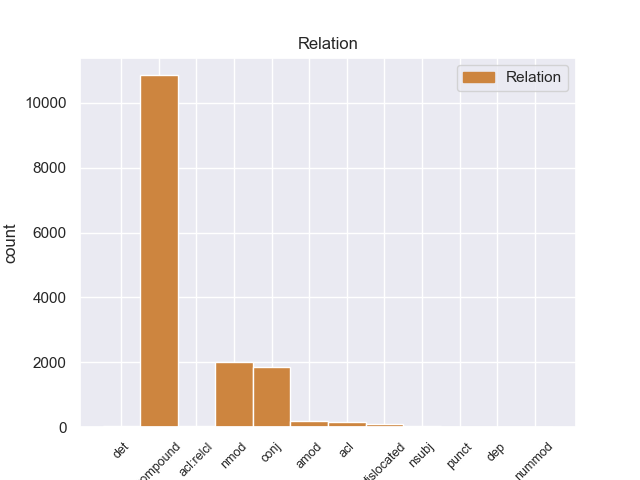
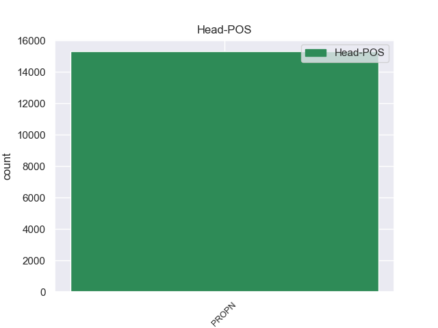
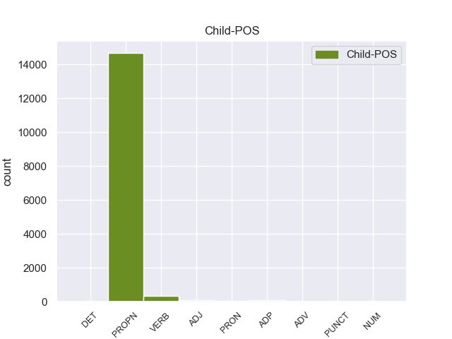

Distribution of features within this leaf



Agreement Rules sorted by frequency.
- When the dependent token is the compound(compound) of the head token, and the head token is PROPN and the dependent token is PROPN.
1 उन्होंने _ _ _ _ 0 _ _ _
2 यहां _ _ _ _ 0 _ _ _
3 वेटिकन _ _ _ _ 0 _ _ _
4 दूतावास _ _ _ _ 0 _ _ _
5 में _ _ _ _ 0 _ _ _
6 एक _ _ _ _ 0 _ _ _
7 शोक _ _ _ _ 0 _ _ _
8 पुस्तिका _ _ _ _ 0 _ _ _
9 पर _ _ _ _ 0 _ _ _
10 हस्ताक्षर _ _ _ _ 0 _ _ _
11 कर _ _ _ _ 0 _ _ _
12 पोप _ _ _ _ 0 _ _ _
13 जॉन _ _ _ _ 0 _ _ _
14 पॉल पॉल PROPN NNPC Case=Nom|Gender=Masc|Number=Sing|Person=3 15 compound _ ChunkId=NP6|ChunkType=child|Tam=0|Translit=pôla|Vib=0
15 द्वितीय द्वितीय PROPN NNP Case=Acc|Gender=Masc|Number=Sing|Person=3 0 _ _ _
16 के _ _ _ _ 0 _ _ _
17 निधन _ _ _ _ 0 _ _ _
18 पर _ _ _ _ 0 _ _ _
19 गहरा _ _ _ _ 0 _ _ _
20 दुख _ _ _ _ 0 _ _ _
21 प्रकट _ _ _ _ 0 _ _ _
22 किया _ _ _ _ 0 _ _ _
23 । _ _ _ _ 0 _ _ _
1 चीनी _ _ _ _ 0 _ _ _
2 प्रधानमंत्री प्रधानमंत्री PROPN NNP Case=Nom|Gender=Masc|Number=Sing|Person=3 4 nmod _ ChunkId=NP|ChunkType=child|Tam=0|Translit=pradhānamaṁtrī|Vib=0
3 वेन _ _ _ _ 0 _ _ _
4 जियाबाओ जियाबाओ PROPN NNP Case=Acc|Gender=Masc|Number=Sing|Person=3 0 _ _ _
5 की _ _ _ _ 0 _ _ _
6 भारत _ _ _ _ 0 _ _ _
7 यात्रा _ _ _ _ 0 _ _ _
8 से _ _ _ _ 0 _ _ _
9 पहले _ _ _ _ 0 _ _ _
10 निर्वासित _ _ _ _ 0 _ _ _
11 तिब्बती _ _ _ _ 0 _ _ _
12 आध्यात्मिक _ _ _ _ 0 _ _ _
13 नेता _ _ _ _ 0 _ _ _
14 दलाई _ _ _ _ 0 _ _ _
15 लामा _ _ _ _ 0 _ _ _
16 ने _ _ _ _ 0 _ _ _
17 कहा _ _ _ _ 0 _ _ _
18 है _ _ _ _ 0 _ _ _
19 कि _ _ _ _ 0 _ _ _
20 चीनी _ _ _ _ 0 _ _ _
21 और _ _ _ _ 0 _ _ _
22 तिब्बती _ _ _ _ 0 _ _ _
23 एक _ _ _ _ 0 _ _ _
24 - _ _ _ _ 0 _ _ _
25 दूसरे _ _ _ _ 0 _ _ _
26 की _ _ _ _ 0 _ _ _
27 सांस्कृतिक _ _ _ _ 0 _ _ _
28 विशिष्टता _ _ _ _ 0 _ _ _
29 का _ _ _ _ 0 _ _ _
30 आदर _ _ _ _ 0 _ _ _
31 करते _ _ _ _ 0 _ _ _
32 हैं _ _ _ _ 0 _ _ _
33 । _ _ _ _ 0 _ _ _
1 उन्होंने _ _ _ _ 0 _ _ _
2 कहा _ _ _ _ 0 _ _ _
3 कि _ _ _ _ 0 _ _ _
4 भारत भारत PROPN NNP Case=Nom|Gender=Masc|Number=Sing|Person=3 0 _ _ _
5 और _ _ _ _ 0 _ _ _
6 चीन चीन PROPN NNP Case=Nom|Gender=Masc|Number=Sing|Person=3 4 conj _ ChunkId=NP3|ChunkType=head|Tam=0|Translit=cīna|Vib=0
7 सर्वाधिक _ _ _ _ 0 _ _ _
8 आबादी _ _ _ _ 0 _ _ _
9 वाले _ _ _ _ 0 _ _ _
10 देश _ _ _ _ 0 _ _ _
11 हैं _ _ _ _ 0 _ _ _
12 । _ _ _ _ 0 _ _ _
1 प्रवक्ता _ _ _ _ 0 _ _ _
2 ने _ _ _ _ 0 _ _ _
3 यह _ _ _ _ 0 _ _ _
4 भी _ _ _ _ 0 _ _ _
5 कहा _ _ _ _ 0 _ _ _
6 कि _ _ _ _ 0 _ _ _
7 हमें _ _ _ _ 0 _ _ _
8 लाइबेरिया _ _ _ _ 0 _ _ _
9 के _ _ _ _ 0 _ _ _
10 दिवालिया _ _ _ _ 0 _ _ _
11 हो हो VERB VM Number=Sing 15 acl _ ChunkId=VGNF|ChunkType=head|Tam=0|Translit=ho|Vib=0_चुक+या
12 चुके _ _ _ _ 0 _ _ _
13 लौह _ _ _ _ 0 _ _ _
14 अयस्क _ _ _ _ 0 _ _ _
15 उद्योग उद्योग PROPN NNP Case=Acc|Gender=Masc|Number=Sing|Person=3 0 _ _ _
16 को _ _ _ _ 0 _ _ _
17 संयुक्त _ _ _ _ 0 _ _ _
18 उपक्रम _ _ _ _ 0 _ _ _
19 के _ _ _ _ 0 _ _ _
20 जरिये _ _ _ _ 0 _ _ _
21 पटरी _ _ _ _ 0 _ _ _
22 पर _ _ _ _ 0 _ _ _
23 लाने _ _ _ _ 0 _ _ _
24 के _ _ _ _ 0 _ _ _
25 लिए _ _ _ _ 0 _ _ _
26 विशेषाधिकार _ _ _ _ 0 _ _ _
27 दिया _ _ _ _ 0 _ _ _
28 गया _ _ _ _ 0 _ _ _
29 है _ _ _ _ 0 _ _ _
30 । _ _ _ _ 0 _ _ _
1 अभिजात्य _ _ _ _ 0 _ _ _
2 व _ _ _ _ 0 _ _ _
3 उच्च _ _ _ _ 0 _ _ _
4 वर्ग _ _ _ _ 0 _ _ _
5 के _ _ _ _ 0 _ _ _
6 पर्यटकों _ _ _ _ 0 _ _ _
7 के _ _ _ _ 0 _ _ _
8 लिए _ _ _ _ 0 _ _ _
9 चलाई चला VERB VM Aspect=Perf|Number=Plur|Person=3|VerbForm=Part 14 amod _ ChunkId=VGNN|ChunkType=head|Tam=yA|Translit=calāī|Vib=या_जा+ना_वाला
10 जाने _ _ _ _ 0 _ _ _
11 वाली _ _ _ _ 0 _ _ _
12 पैलेस _ _ _ _ 0 _ _ _
13 ऑन _ _ _ _ 0 _ _ _
14 व्हील्स व्हील्स PROPN NNP Case=Nom|Gender=Masc|Number=Plur|Person=3 0 _ _ _
15 अक्टूबर _ _ _ _ 0 _ _ _
16 के _ _ _ _ 0 _ _ _
17 दूसरे _ _ _ _ 0 _ _ _
18 सप्ताह _ _ _ _ 0 _ _ _
19 में _ _ _ _ 0 _ _ _
20 अपना _ _ _ _ 0 _ _ _
21 सफर _ _ _ _ 0 _ _ _
22 शुरू _ _ _ _ 0 _ _ _
23 करती _ _ _ _ 0 _ _ _
24 है _ _ _ _ 0 _ _ _
25 । _ _ _ _ 0 _ _ _
1 पत्रिका _ _ _ _ 0 _ _ _
2 के _ _ _ _ 0 _ _ _
3 अनुसार _ _ _ _ 0 _ _ _
4 खान _ _ _ _ 0 _ _ _
5 की _ _ _ _ 0 _ _ _
6 इन _ _ _ _ 0 _ _ _
7 यात्राओं _ _ _ _ 0 _ _ _
8 का _ _ _ _ 0 _ _ _
9 उद्देश्य _ _ _ _ 0 _ _ _
10 अभी _ _ _ _ 0 _ _ _
11 तक _ _ _ _ 0 _ _ _
12 स्पष्ट _ _ _ _ 0 _ _ _
13 नहीं _ _ _ _ 0 _ _ _
14 है _ _ _ _ 0 _ _ _
15 , _ _ _ _ 0 _ _ _
16 लेकिन _ _ _ _ 0 _ _ _
17 खुफिया _ _ _ _ 0 _ _ _
18 अधिकारियों _ _ _ _ 0 _ _ _
19 का _ _ _ _ 0 _ _ _
20 मानना _ _ _ _ 0 _ _ _
21 है _ _ _ _ 0 _ _ _
22 कि _ _ _ _ 0 _ _ _
23 सऊदी _ _ _ _ 0 _ _ _
24 अरब _ _ _ _ 0 _ _ _
25 और _ _ _ _ 0 _ _ _
26 मिस्र _ _ _ _ 0 _ _ _
27 परमाणु _ _ _ _ 0 _ _ _
28 तक़नीक _ _ _ _ 0 _ _ _
29 की _ _ _ _ 0 _ _ _
30 तलाश _ _ _ _ 0 _ _ _
31 में _ _ _ _ 0 _ _ _
32 हैं _ _ _ _ 0 _ _ _
33 और _ _ _ _ 0 _ _ _
34 कई _ _ _ _ 0 _ _ _
35 अफ्रीकी _ _ _ _ 0 _ _ _
36 देश _ _ _ _ 0 _ _ _
37 कच्चे कच्चा ADJ JJ Case=Nom|Gender=Masc|Number=Sing 38 amod _ ChunkId=NP12|ChunkType=child|Translit=kacce
38 यूरेनियम यूरेनियम PROPN NNP Case=Nom|Gender=Masc|Number=Sing|Person=3 0 _ _ _
39 संपन्न _ _ _ _ 0 _ _ _
40 हैं _ _ _ _ 0 _ _ _
41 । _ _ _ _ 0 _ _ _
1 मुंबई _ _ _ _ 0 _ _ _
2 में _ _ _ _ 0 _ _ _
3 सेंटॉर _ _ _ _ 0 _ _ _
4 होटलों _ _ _ _ 0 _ _ _
5 की _ _ _ _ 0 _ _ _
6 बिक्री _ _ _ _ 0 _ _ _
7 के _ _ _ _ 0 _ _ _
8 मामले _ _ _ _ 0 _ _ _
9 में _ _ _ _ 0 _ _ _
10 नियंत्रक _ _ _ _ 0 _ _ _
11 एवं _ _ _ _ 0 _ _ _
12 महालेखा _ _ _ _ 0 _ _ _
13 परीक्षक परीक्षक PROPN NNP Case=Acc|Gender=Masc|Number=Sing|Person=3 0 _ _ _
14 ( _ _ _ _ 0 _ _ _
15 कैग _ _ _ _ 0 _ _ _
16 ) _ _ _ _ 0 _ _ _
17 की का ADP PSP AdpType=Post|Case=Nom|Gender=Fem|Number=Sing 13 dislocated _ ChunkId=FRAGP|ChunkType=head|Translit=kī
18 रिपोर्ट _ _ _ _ 0 _ _ _
19 एक _ _ _ _ 0 _ _ _
20 बड़ा _ _ _ _ 0 _ _ _
21 विवाद _ _ _ _ 0 _ _ _
22 खड़ा _ _ _ _ 0 _ _ _
23 कर _ _ _ _ 0 _ _ _
24 सकती _ _ _ _ 0 _ _ _
25 है _ _ _ _ 0 _ _ _
26 । _ _ _ _ 0 _ _ _
1 यह _ _ _ _ 0 _ _ _
2 कहना _ _ _ _ 0 _ _ _
3 है _ _ _ _ 0 _ _ _
4 अमेरिका अमेरिका PROPN NNP Case=Acc|Gender=Masc|Number=Sing|Person=3 0 _ _ _
5 का _ _ _ _ 0 _ _ _
6 , _ _ _ _ 0 _ _ _
7 जो _ _ _ _ 0 _ _ _
8 सऊदी _ _ _ _ 0 _ _ _
9 अरब _ _ _ _ 0 _ _ _
10 और _ _ _ _ 0 _ _ _
11 अन्य _ _ _ _ 0 _ _ _
12 अरब _ _ _ _ 0 _ _ _
13 देशों _ _ _ _ 0 _ _ _
14 को _ _ _ _ 0 _ _ _
15 परमाणु _ _ _ _ 0 _ _ _
16 तक़नीक _ _ _ _ 0 _ _ _
17 बेचने _ _ _ _ 0 _ _ _
18 में _ _ _ _ 0 _ _ _
19 खान _ _ _ _ 0 _ _ _
20 नेटवर्क _ _ _ _ 0 _ _ _
21 की _ _ _ _ 0 _ _ _
22 भूमिका _ _ _ _ 0 _ _ _
23 का _ _ _ _ 0 _ _ _
24 पता _ _ _ _ 0 _ _ _
25 लगा लगा VERB VM Gender=Masc|Number=Sing|Person=3|Voice=Act 4 acl:relcl _ ChunkId=VGF2|ChunkType=head|Stype=declarative|Tam=0|Translit=lagā|Vib=0_रह+या_है
26 रहा _ _ _ _ 0 _ _ _
27 है _ _ _ _ 0 _ _ _
28 । _ _ _ _ 0 _ _ _
1 पर्यवेक्षकों _ _ _ _ 0 _ _ _
2 का _ _ _ _ 0 _ _ _
3 कहना _ _ _ _ 0 _ _ _
4 है _ _ _ _ 0 _ _ _
5 कि _ _ _ _ 0 _ _ _
6 इस यह DET DEM Case=Acc|Number=Sing|Person=3|PronType=Dem 7 det _ ChunkId=NP2|ChunkType=child|Translit=isa
7 मार्च मार्च PROPN NNP Case=Acc|Gender=Masc|Number=Sing|Person=3 0 _ _ _
8 के _ _ _ _ 0 _ _ _
9 दौरान _ _ _ _ 0 _ _ _
10 कांग्रेसियों _ _ _ _ 0 _ _ _
11 ने _ _ _ _ 0 _ _ _
12 भाजपा _ _ _ _ 0 _ _ _
13 का _ _ _ _ 0 _ _ _
14 जिक्र _ _ _ _ 0 _ _ _
15 करने _ _ _ _ 0 _ _ _
16 से _ _ _ _ 0 _ _ _
17 परहेज _ _ _ _ 0 _ _ _
18 कर _ _ _ _ 0 _ _ _
19 लोगों _ _ _ _ 0 _ _ _
20 में _ _ _ _ 0 _ _ _
21 यह _ _ _ _ 0 _ _ _
22 संदेश _ _ _ _ 0 _ _ _
23 दिया _ _ _ _ 0 _ _ _
24 कि _ _ _ _ 0 _ _ _
25 वह _ _ _ _ 0 _ _ _
26 गांधीवादी _ _ _ _ 0 _ _ _
27 विरासत _ _ _ _ 0 _ _ _
28 को _ _ _ _ 0 _ _ _
29 लेकर _ _ _ _ 0 _ _ _
30 भाजपा _ _ _ _ 0 _ _ _
31 या _ _ _ _ 0 _ _ _
32 किसी _ _ _ _ 0 _ _ _
33 अन्य _ _ _ _ 0 _ _ _
34 पार्टी _ _ _ _ 0 _ _ _
35 से _ _ _ _ 0 _ _ _
36 टकराव _ _ _ _ 0 _ _ _
37 नहीं _ _ _ _ 0 _ _ _
38 चाहती _ _ _ _ 0 _ _ _
39 है _ _ _ _ 0 _ _ _
40 । _ _ _ _ 0 _ _ _
1 भारत _ _ _ _ 0 _ _ _
2 में _ _ _ _ 0 _ _ _
3 जापान _ _ _ _ 0 _ _ _
4 के _ _ _ _ 0 _ _ _
5 राजदूत _ _ _ _ 0 _ _ _
6 याशुकुनी _ _ _ _ 0 _ _ _
7 इनोकी _ _ _ _ 0 _ _ _
8 ने _ _ _ _ 0 _ _ _
9 यहाँ _ _ _ _ 0 _ _ _
10 पत्रकारों _ _ _ _ 0 _ _ _
11 से _ _ _ _ 0 _ _ _
12 कहा _ _ _ _ 0 _ _ _
13 कि _ _ _ _ 0 _ _ _
14 विदेश _ _ _ _ 0 _ _ _
15 से _ _ _ _ 0 _ _ _
16 किसी _ _ _ _ 0 _ _ _
17 तरह _ _ _ _ 0 _ _ _
18 की _ _ _ _ 0 _ _ _
19 मदद _ _ _ _ 0 _ _ _
20 न _ _ _ _ 0 _ _ _
21 लेने ले VERB VM Case=Acc|Number=Sing|VerbForm=Inf 24 nmod _ ChunkId=VGNN|ChunkType=head|Tam=nA|Translit=lene|Vib=ना_का
22 की _ _ _ _ 0 _ _ _
23 भारत _ _ _ _ 0 _ _ _
24 सरकार सरकार PROPN NNP Case=Acc|Gender=Fem|Number=Sing|Person=3 0 _ _ _
25 की _ _ _ _ 0 _ _ _
26 स्थिति _ _ _ _ 0 _ _ _
27 को _ _ _ _ 0 _ _ _
28 हम _ _ _ _ 0 _ _ _
29 समझते _ _ _ _ 0 _ _ _
30 हैं _ _ _ _ 0 _ _ _
31 और _ _ _ _ 0 _ _ _
32 उसका _ _ _ _ 0 _ _ _
33 सम्मान _ _ _ _ 0 _ _ _
34 करते _ _ _ _ 0 _ _ _
35 हैं _ _ _ _ 0 _ _ _
36 । _ _ _ _ 0 _ _ _
1 जबकि _ _ _ _ 0 _ _ _
2 उनके वह PRON PRP Case=Acc,Gen|Number=Sing|Person=3|Polite=Form|Poss=Yes|PronType=Prs 3 nmod _ ChunkId=NP|ChunkType=head|Tam=kA|Translit=unake|Vib=का
3 बसंतकुंज बसंतकुंज PROPN NNP Case=Nom|Gender=Masc|Number=Sing|Person=3 0 _ _ _
4 स्थित _ _ _ _ 0 _ _ _
5 आवास _ _ _ _ 0 _ _ _
6 पर _ _ _ _ 0 _ _ _
7 सुरक्षा _ _ _ _ 0 _ _ _
8 व्यवस्था _ _ _ _ 0 _ _ _
9 कड़ी _ _ _ _ 0 _ _ _
10 कर _ _ _ _ 0 _ _ _
11 दी _ _ _ _ 0 _ _ _
12 गई _ _ _ _ 0 _ _ _
13 है _ _ _ _ 0 _ _ _
14 । _ _ _ _ 0 _ _ _
1 जम्मू _ _ _ _ 0 _ _ _
2 - _ _ _ _ 0 _ _ _
3 कश्मीर _ _ _ _ 0 _ _ _
4 पुलिस _ _ _ _ 0 _ _ _
5 द्वारा _ _ _ _ 0 _ _ _
6 भेजी _ _ _ _ 0 _ _ _
7 गई _ _ _ _ 0 _ _ _
8 अश्लील _ _ _ _ 0 _ _ _
9 सीडी _ _ _ _ 0 _ _ _
10 में _ _ _ _ 0 _ _ _
11 जो _ _ _ _ 0 _ _ _
12 लड़की _ _ _ _ 0 _ _ _
13 है _ _ _ _ 0 _ _ _
14 वह वह PRON PRP Case=Nom|Number=Sing|Person=3|PronType=Prs 19 nsubj _ ChunkId=NP4|ChunkType=head|Tam=0|Translit=vaha|Vib=0
15 पूर्व _ _ _ _ 0 _ _ _
16 मिस _ _ _ _ 0 _ _ _
17 जम्मू _ _ _ _ 0 _ _ _
18 अनारा _ _ _ _ 0 _ _ _
19 गुप्ता गुप्ता PROPN NNP Case=Nom|Number=Sing|Person=3 0 _ _ _
20 नहीं _ _ _ _ 0 _ _ _
21 है _ _ _ _ 0 _ _ _
22 । _ _ _ _ 0 _ _ _
1 ब्रेमर ब्रेमर PROPN NNP Case=Nom|Number=Sing|Person=3 6 nsubj _ ChunkId=NP|ChunkType=head|Tam=0|Translit=bremara|Vib=0
2 पिछले _ _ _ _ 0 _ _ _
3 वर्ष _ _ _ _ 0 _ _ _
4 मई _ _ _ _ 0 _ _ _
5 से _ _ _ _ 0 _ _ _
6 इराक इराक PROPN NNP Case=Acc|Gender=Masc|Number=Sing|Person=3 0 _ _ _
7 में _ _ _ _ 0 _ _ _
8 थे _ _ _ _ 0 _ _ _
9 । _ _ _ _ 0 _ _ _
1 हत्यारों _ _ _ _ 0 _ _ _
2 की _ _ _ _ 0 _ _ _
3 तलाश _ _ _ _ 0 _ _ _
4 के _ _ _ _ 0 _ _ _
5 लिए _ _ _ _ 0 _ _ _
6 मोहम्मदपुर मोहम्मदपुर PROPN NNP Case=Acc|Gender=Masc|Number=Sing|Person=3 0 _ _ _
7 और _ _ _ _ 0 _ _ _
8 उसके वह PRON PRP Case=Acc,Gen|Number=Sing|Person=3|Poss=Yes|PronType=Prs 6 conj _ ChunkId=NP4|ChunkType=head|Tam=ke|Translit=usake|Vib=0_आसपास_का
9 आसपास _ _ _ _ 0 _ _ _
10 के _ _ _ _ 0 _ _ _
11 इलाकों _ _ _ _ 0 _ _ _
12 में _ _ _ _ 0 _ _ _
13 दबिश _ _ _ _ 0 _ _ _
14 दी _ _ _ _ 0 _ _ _
15 जा _ _ _ _ 0 _ _ _
16 रही _ _ _ _ 0 _ _ _
17 है _ _ _ _ 0 _ _ _
18 । _ _ _ _ 0 _ _ _
1 प्रमोद _ _ _ _ 0 _ _ _
2 मित्तल _ _ _ _ 0 _ _ _
3 और _ _ _ _ 0 _ _ _
4 उनकी _ _ _ _ 0 _ _ _
5 सहयोगी _ _ _ _ 0 _ _ _
6 कंपनी _ _ _ _ 0 _ _ _
7 प्रोवाइडर _ _ _ _ 0 _ _ _
8 लिमिटेड _ _ _ _ 0 _ _ _
9 का _ _ _ _ 0 _ _ _
10 दावा _ _ _ _ 0 _ _ _
11 है _ _ _ _ 0 _ _ _
12 कि _ _ _ _ 0 _ _ _
13 नवंबर _ _ _ _ 0 _ _ _
14 २००३ _ _ _ _ 0 _ _ _
15 में _ _ _ _ 0 _ _ _
16 लिमिन्को लिमिन्को PROPN NNP Case=Acc|Gender=Masc|Number=Sing|Person=3 0 _ _ _
17 ( _ _ _ _ 0 _ _ _
18 लाइबेरियन _ _ _ _ 0 _ _ _
19 माइनिंग _ _ _ _ 0 _ _ _
20 कॉरपोरेशन _ _ _ _ 0 _ _ _
21 ) _ _ _ _ 0 _ _ _
22 के _ _ _ _ 0 _ _ _
23 साथ साथ ADV NST AdpType=Post|Case=Nom|Gender=Masc|Number=Sing|Person=3 16 dislocated _ AltTag=ADV-NOUN|ChunkId=FRAGP|ChunkType=head|Translit=sātha
24 समझौते _ _ _ _ 0 _ _ _
25 पर _ _ _ _ 0 _ _ _
26 हस्ताक्षर _ _ _ _ 0 _ _ _
27 होने _ _ _ _ 0 _ _ _
28 के _ _ _ _ 0 _ _ _
29 बाद _ _ _ _ 0 _ _ _
30 इस _ _ _ _ 0 _ _ _
31 परियोजना _ _ _ _ 0 _ _ _
32 पर _ _ _ _ 0 _ _ _
33 उनका _ _ _ _ 0 _ _ _
34 हक़ _ _ _ _ 0 _ _ _
35 बनता _ _ _ _ 0 _ _ _
36 है _ _ _ _ 0 _ _ _
37 । _ _ _ _ 0 _ _ _
1 वह _ _ _ _ 0 _ _ _
2 दिल्ली दिल्ली PROPN NNP Case=Acc|Gender=Fem|Number=Sing|Person=3 0 _ _ _
3 में _ _ _ _ 0 _ _ _
4 ही _ _ _ _ 0 _ _ _
5 हैं _ _ _ _ 0 _ _ _
6 , _ _ _ _ 0 _ _ _
7 लेकिन _ _ _ _ 0 _ _ _
8 इस _ _ _ _ 0 _ _ _
9 समय _ _ _ _ 0 _ _ _
10 उपलब्ध _ _ _ _ 0 _ _ _
11 नहीं _ _ _ _ 0 _ _ _
12 होंगे हो VERB VM Gender=Masc|Mood=Ind|Number=Sing|Person=3|Polite=Form|Tense=Fut|VerbForm=Fin|Voice=Act 2 conj _ ChunkId=VGF2|ChunkType=head|Stype=declarative|Tam=gA|Translit=hoṁge|Vib=गा
13 । _ _ _ _ 0 _ _ _
1 ब्रिटेन _ _ _ _ 0 _ _ _
2 के _ _ _ _ 0 _ _ _
3 अमीरों _ _ _ _ 0 _ _ _
4 की _ _ _ _ 0 _ _ _
5 सूची _ _ _ _ 0 _ _ _
6 में _ _ _ _ 0 _ _ _
7 अन्य _ _ _ _ 0 _ _ _
8 अनिवासी _ _ _ _ 0 _ _ _
9 भारतीयों _ _ _ _ 0 _ _ _
10 में _ _ _ _ 0 _ _ _
11 अनुराग _ _ _ _ 0 _ _ _
12 दीक्षित _ _ _ _ 0 _ _ _
13 ( _ _ _ _ 0 _ _ _
14 इंटरनेट _ _ _ _ 0 _ _ _
15 गैंबलिंग _ _ _ _ 0 _ _ _
16 , _ _ _ _ 0 _ _ _
17 १.७ _ _ _ _ 0 _ _ _
18 अरब _ _ _ _ 0 _ _ _
19 पौंड _ _ _ _ 0 _ _ _
20 ) _ _ _ _ 0 _ _ _
21 , _ _ _ _ 0 _ _ _
22 अनिल _ _ _ _ 0 _ _ _
23 अग्रवाल _ _ _ _ 0 _ _ _
24 ( _ _ _ _ 0 _ _ _
25 खनन _ _ _ _ 0 _ _ _
26 , _ _ _ _ 0 _ _ _
27 १.६८ _ _ _ _ 0 _ _ _
28 अरब _ _ _ _ 0 _ _ _
29 पौंड _ _ _ _ 0 _ _ _
30 ) _ _ _ _ 0 _ _ _
31 , _ _ _ _ 0 _ _ _
32 जटानिया _ _ _ _ 0 _ _ _
33 बंधु _ _ _ _ 0 _ _ _
34 ( _ _ _ _ 0 _ _ _
35 सौंदर्य _ _ _ _ 0 _ _ _
36 प्रसाधन _ _ _ _ 0 _ _ _
37 , _ _ _ _ 0 _ _ _
38 ८५ _ _ _ _ 0 _ _ _
39 करोड़ _ _ _ _ 0 _ _ _
40 पौंड _ _ _ _ 0 _ _ _
41 ) _ _ _ _ 0 _ _ _
42 , _ _ _ _ 0 _ _ _
43 नरेश _ _ _ _ 0 _ _ _
44 गोयल _ _ _ _ 0 _ _ _
45 ( _ _ _ _ 0 _ _ _
46 एयरलाइंस _ _ _ _ 0 _ _ _
47 , _ _ _ _ 0 _ _ _
48 ७८ _ _ _ _ 0 _ _ _
49 करोड़ _ _ _ _ 0 _ _ _
50 पौंड _ _ _ _ 0 _ _ _
51 ) _ _ _ _ 0 _ _ _
52 , _ _ _ _ 0 _ _ _
53 विक्रांत _ _ _ _ 0 _ _ _
54 भार्गव _ _ _ _ 0 _ _ _
55 ( _ _ _ _ 0 _ _ _
56 इंटरनेट _ _ _ _ 0 _ _ _
57 गैंबलिंग _ _ _ _ 0 _ _ _
58 , _ _ _ _ 0 _ _ _
59 ५९०२ _ _ _ _ 0 _ _ _
60 करोड़ _ _ _ _ 0 _ _ _
61 पौंड _ _ _ _ 0 _ _ _
62 ) _ _ _ _ 0 _ _ _
63 , _ _ _ _ 0 _ _ _
64 गुलु _ _ _ _ 0 _ _ _
65 ललवानी _ _ _ _ 0 _ _ _
66 ( _ _ _ _ 0 _ _ _
67 उपभोक्ता _ _ _ _ 0 _ _ _
68 इलेक्ट्रॅनिक्स _ _ _ _ 0 _ _ _
69 , _ _ _ _ 0 _ _ _
70 ४५ _ _ _ _ 0 _ _ _
71 करोड़ _ _ _ _ 0 _ _ _
72 पौंड _ _ _ _ 0 _ _ _
73 ) _ _ _ _ 0 _ _ _
74 , _ _ _ _ 0 _ _ _
75 भिखु भिखु PROPN NNP Case=Nom|Gender=Masc|Number=Sing|Person=3 108 dislocated _ ChunkId=NP23|ChunkType=head|Tam=0|Translit=bhikhu|Vib=0
76 एवं _ _ _ _ 0 _ _ _
77 विजय _ _ _ _ 0 _ _ _
78 पटेल _ _ _ _ 0 _ _ _
79 ( _ _ _ _ 0 _ _ _
80 फार्मास्युटिकल्स _ _ _ _ 0 _ _ _
81 , _ _ _ _ 0 _ _ _
82 ४४.४ _ _ _ _ 0 _ _ _
83 करोड़ _ _ _ _ 0 _ _ _
84 पौंड _ _ _ _ 0 _ _ _
85 ) _ _ _ _ 0 _ _ _
86 , _ _ _ _ 0 _ _ _
87 लॉर्ड _ _ _ _ 0 _ _ _
88 बागरी _ _ _ _ 0 _ _ _
89 एवं _ _ _ _ 0 _ _ _
90 परिवार _ _ _ _ 0 _ _ _
91 ( _ _ _ _ 0 _ _ _
92 ६ _ _ _ _ 0 _ _ _
93 करोड़ _ _ _ _ 0 _ _ _
94 पौंड _ _ _ _ 0 _ _ _
95 ) _ _ _ _ 0 _ _ _
96 , _ _ _ _ 0 _ _ _
97 सुखपाल _ _ _ _ 0 _ _ _
98 सिंह _ _ _ _ 0 _ _ _
99 अहलुवालिया _ _ _ _ 0 _ _ _
100 ( _ _ _ _ 0 _ _ _
101 १० _ _ _ _ 0 _ _ _
102 करोड़ _ _ _ _ 0 _ _ _
103 पौंड _ _ _ _ 0 _ _ _
104 ) _ _ _ _ 0 _ _ _
105 और _ _ _ _ 0 _ _ _
106 सर _ _ _ _ 0 _ _ _
107 गुलाम _ _ _ _ 0 _ _ _
108 नून नून PROPN NNP Case=Nom|Number=Sing|Person=3 0 _ _ _
109 ( _ _ _ _ 0 _ _ _
110 ६.५ _ _ _ _ 0 _ _ _
111 करोड़ _ _ _ _ 0 _ _ _
112 पौंड _ _ _ _ 0 _ _ _
113 ) _ _ _ _ 0 _ _ _
114 शामिल _ _ _ _ 0 _ _ _
115 हैं _ _ _ _ 0 _ _ _
116 । _ _ _ _ 0 _ _ _
1 लेकिन _ _ _ _ 0 _ _ _
2 संस्थान _ _ _ _ 0 _ _ _
3 में _ _ _ _ 0 _ _ _
4 कायर्रत _ _ _ _ 0 _ _ _
5 कोई कोई PRON PRP Case=Nom|Number=Sing|Person=3|PronType=Prs 7 amod _ ChunkId=NP2|ChunkType=child|Tam=0|Translit=koī|Vib=0
6 अहमद _ _ _ _ 0 _ _ _
7 हुसैन हुसैन PROPN NNP Case=Nom|Gender=Masc|Number=Sing|Person=3 0 _ _ _
8 या _ _ _ _ 0 _ _ _
9 आबिद _ _ _ _ 0 _ _ _
10 हुसैन _ _ _ _ 0 _ _ _
11 नामक _ _ _ _ 0 _ _ _
12 अधिकारी _ _ _ _ 0 _ _ _
13 अभी _ _ _ _ 0 _ _ _
14 तक _ _ _ _ 0 _ _ _
15 नहीं _ _ _ _ 0 _ _ _
16 पाया _ _ _ _ 0 _ _ _
17 गया _ _ _ _ 0 _ _ _
18 । _ _ _ _ 0 _ _ _
1 उल्लेखनीय _ _ _ _ 0 _ _ _
2 है _ _ _ _ 0 _ _ _
3 कि _ _ _ _ 0 _ _ _
4 इस _ _ _ _ 0 _ _ _
5 दौरान दौरान ADV NST AdpType=Post|Case=Nom|Gender=Masc|Number=Sing|Person=3 8 nmod _ AltTag=ADV-NOUN|ChunkId=NP|ChunkType=head|Translit=daurāna
6 डॉ. _ _ _ _ 0 _ _ _
7 जोशी _ _ _ _ 0 _ _ _
8 दिल्ली दिल्ली PROPN NNP Case=Acc|Gender=Fem|Number=Sing|Person=3 0 _ _ _
9 से _ _ _ _ 0 _ _ _
10 बाहर _ _ _ _ 0 _ _ _
11 थे _ _ _ _ 0 _ _ _
12 । _ _ _ _ 0 _ _ _
1 पाकिस्तान _ _ _ _ 0 _ _ _
2 क्रिकेट _ _ _ _ 0 _ _ _
3 बोर्ड बोर्ड PROPN NNP Case=Acc|Gender=Masc|Number=Sing|Person=3 0 _ _ _
4 ( _ _ _ _ 0 _ _ _
5 पीसीबी _ _ _ _ 0 _ _ _
6 ) _ _ _ _ 0 _ _ _
7 के का ADP PSP AdpType=Post|Case=Acc|Gender=Masc|Number=Sing 3 nmod _ ChunkId=FRAGP|ChunkType=head|Translit=ke
8 चेयरमैन _ _ _ _ 0 _ _ _
9 ने _ _ _ _ 0 _ _ _
10 इस _ _ _ _ 0 _ _ _
11 बात _ _ _ _ 0 _ _ _
12 की _ _ _ _ 0 _ _ _
13 पुष्टि _ _ _ _ 0 _ _ _
14 की _ _ _ _ 0 _ _ _
15 है _ _ _ _ 0 _ _ _
16 कि _ _ _ _ 0 _ _ _
17 उन्होंने _ _ _ _ 0 _ _ _
18 भारतीय _ _ _ _ 0 _ _ _
19 क्रिकेट _ _ _ _ 0 _ _ _
20 कंट्रोल _ _ _ _ 0 _ _ _
21 बोर्ड _ _ _ _ 0 _ _ _
22 ( _ _ _ _ 0 _ _ _
23 बीसीसीआई _ _ _ _ 0 _ _ _
24 ) _ _ _ _ 0 _ _ _
25 से _ _ _ _ 0 _ _ _
26 आगामी _ _ _ _ 0 _ _ _
27 टेस्ट _ _ _ _ 0 _ _ _
28 और _ _ _ _ 0 _ _ _
29 एक _ _ _ _ 0 _ _ _
30 दिवसीय _ _ _ _ 0 _ _ _
31 श्रृंखला _ _ _ _ 0 _ _ _
32 के _ _ _ _ 0 _ _ _
33 लिए _ _ _ _ 0 _ _ _
34 प्रस्तावित _ _ _ _ 0 _ _ _
35 एक _ _ _ _ 0 _ _ _
36 या _ _ _ _ 0 _ _ _
37 दो _ _ _ _ 0 _ _ _
38 आयोजन _ _ _ _ 0 _ _ _
39 स्थलों _ _ _ _ 0 _ _ _
40 पर _ _ _ _ 0 _ _ _
41 पुनर्विचार _ _ _ _ 0 _ _ _
42 करने _ _ _ _ 0 _ _ _
43 का _ _ _ _ 0 _ _ _
44 अनुरोध _ _ _ _ 0 _ _ _
45 किया _ _ _ _ 0 _ _ _
46 है _ _ _ _ 0 _ _ _
47 । _ _ _ _ 0 _ _ _
1 दिल्ली दिल्ली PROPN NNP Case=Acc|Gender=Fem|Number=Sing|Person=3 0 _ _ _
2 तथा _ _ _ _ 0 _ _ _
3 आसपास आसपास ADV NST AdpType=Post|Case=Acc|Gender=Masc|Number=Sing|Person=3 1 conj _ AltTag=ADV-NOUN|ChunkId=NP2|ChunkType=head|Translit=āsapāsa|Vib=0_का
4 के _ _ _ _ 0 _ _ _
5 क्षेत्रों _ _ _ _ 0 _ _ _
6 में _ _ _ _ 0 _ _ _
7 भी _ _ _ _ 0 _ _ _
8 अच्छी _ _ _ _ 0 _ _ _
9 बारिश _ _ _ _ 0 _ _ _
10 हुई _ _ _ _ 0 _ _ _
11 मगर _ _ _ _ 0 _ _ _
12 यह _ _ _ _ 0 _ _ _
13 मानसून _ _ _ _ 0 _ _ _
14 पूर्व _ _ _ _ 0 _ _ _
15 बारिश _ _ _ _ 0 _ _ _
16 है _ _ _ _ 0 _ _ _
17 । _ _ _ _ 0 _ _ _
1 पटवर्द्धन _ _ _ _ 0 _ _ _
2 ने _ _ _ _ 0 _ _ _
3 नेशनल _ _ _ _ 0 _ _ _
4 फिल्म _ _ _ _ 0 _ _ _
5 डवलपमेंट _ _ _ _ 0 _ _ _
6 काउंसिल _ _ _ _ 0 _ _ _
7 की _ _ _ _ 0 _ _ _
8 पत्रिका _ _ _ _ 0 _ _ _
9 ( ( PUNCT SYM Case=Nom|Gender=Fem|Number=Sing 12 punct _ ChunkId=NP4|ChunkType=child|SpaceAfter=No|Translit=(
10 सिनेमा _ _ _ _ 0 _ _ _
11 इन _ _ _ _ 0 _ _ _
12 इंडिया इंडिया PROPN NNP Case=Acc|Gender=Masc|Number=Sing|Person=3 0 _ _ _
13 ) _ _ _ _ 0 _ _ _
14 के _ _ _ _ 0 _ _ _
15 साथ _ _ _ _ 0 _ _ _
16 साक्षात्कार _ _ _ _ 0 _ _ _
17 में _ _ _ _ 0 _ _ _
18 कहा _ _ _ _ 0 _ _ _
19 कि _ _ _ _ 0 _ _ _
20 जिस _ _ _ _ 0 _ _ _
21 फिल्म _ _ _ _ 0 _ _ _
22 पर _ _ _ _ 0 _ _ _
23 घोर _ _ _ _ 0 _ _ _
24 आपत्ति _ _ _ _ 0 _ _ _
25 जताई _ _ _ _ 0 _ _ _
26 गई _ _ _ _ 0 _ _ _
27 थी _ _ _ _ 0 _ _ _
28 , _ _ _ _ 0 _ _ _
29 उस _ _ _ _ 0 _ _ _
30 फिल्म _ _ _ _ 0 _ _ _
31 ने _ _ _ _ 0 _ _ _
32 पिछले _ _ _ _ 0 _ _ _
33 साल _ _ _ _ 0 _ _ _
34 सर्वश्रेष्ठ _ _ _ _ 0 _ _ _
35 नान _ _ _ _ 0 _ _ _
36 - _ _ _ _ 0 _ _ _
37 फिक्शन _ _ _ _ 0 _ _ _
38 फिल्म _ _ _ _ 0 _ _ _
39 का _ _ _ _ 0 _ _ _
40 पुरस्कार _ _ _ _ 0 _ _ _
41 जीता _ _ _ _ 0 _ _ _
42 । _ _ _ _ 0 _ _ _
1 क्या _ _ _ _ 0 _ _ _
2 पाकिस्तान _ _ _ _ 0 _ _ _
3 के _ _ _ _ 0 _ _ _
4 प्रधानमंत्री प्रधानमंत्री PROPN NNP Case=Nom|Gender=Masc|Number=Sing|Person=3 8 dep _ ChunkId=NP2|ChunkType=head|Tam=0|Translit=pradhānamaṁtrī|Vib=0
5 मीर _ _ _ _ 0 _ _ _
6 जफरुल्ला _ _ _ _ 0 _ _ _
7 खान _ _ _ _ 0 _ _ _
8 जमाली जमाली PROPN NNP Case=Acc|Gender=Masc|Number=Sing|Person=3 0 _ _ _
9 के _ _ _ _ 0 _ _ _
10 सत्ता _ _ _ _ 0 _ _ _
11 में _ _ _ _ 0 _ _ _
12 गिने _ _ _ _ 0 _ _ _
13 - _ _ _ _ 0 _ _ _
14 चुने _ _ _ _ 0 _ _ _
15 दिन _ _ _ _ 0 _ _ _
16 रह _ _ _ _ 0 _ _ _
17 गए _ _ _ _ 0 _ _ _
18 हैं _ _ _ _ 0 _ _ _
19 । _ _ _ _ 0 _ _ _
1 इससे _ _ _ _ 0 _ _ _
2 पहले _ _ _ _ 0 _ _ _
3 यह _ _ _ _ 0 _ _ _
4 रिकॉर्ड _ _ _ _ 0 _ _ _
5 सौरव _ _ _ _ 0 _ _ _
6 गांगुली गांगुली PROPN NNP Case=Acc|Gender=Masc|Number=Sing|Person=3 0 _ _ _
7 ( _ _ _ _ 0 _ _ _
8 एडीलेड _ _ _ _ 0 _ _ _
9 , _ _ _ _ 0 _ _ _
10 २००० _ _ _ _ 0 _ _ _
11 ) _ _ _ _ 0 _ _ _
12 तथा _ _ _ _ 0 _ _ _
13 सचिन _ _ _ _ 0 _ _ _
14 तेंदुलकर _ _ _ _ 0 _ _ _
15 ( _ _ _ _ 0 _ _ _
16 रावलपिंडी _ _ _ _ 0 _ _ _
17 , _ _ _ _ 0 _ _ _
18 २००४ _ _ _ _ 0 _ _ _
19 ) _ _ _ _ 0 _ _ _
20 के का ADP PSP AdpType=Post|Case=Acc|Gender=Masc|Number=Sing 6 conj _ ChunkId=FRAGP|ChunkType=head|Translit=ke
21 नाम _ _ _ _ 0 _ _ _
22 था _ _ _ _ 0 _ _ _
23 । _ _ _ _ 0 _ _ _
1 भाजपा _ _ _ _ 0 _ _ _
2 नीत _ _ _ _ 0 _ _ _
3 सरकार _ _ _ _ 0 _ _ _
4 द्वारा _ _ _ _ 0 _ _ _
5 फीस _ _ _ _ 0 _ _ _
6 १५०,००० _ _ _ _ 0 _ _ _
7 से _ _ _ _ 0 _ _ _
8 ३०,००० _ _ _ _ 0 _ _ _
9 करने _ _ _ _ 0 _ _ _
10 पर _ _ _ _ 0 _ _ _
11 उपजे _ _ _ _ 0 _ _ _
12 विवाद _ _ _ _ 0 _ _ _
13 का _ _ _ _ 0 _ _ _
14 कोई _ _ _ _ 0 _ _ _
15 सर्वसम्मत _ _ _ _ 0 _ _ _
16 हल _ _ _ _ 0 _ _ _
17 निकालने _ _ _ _ 0 _ _ _
18 के _ _ _ _ 0 _ _ _
19 लिए _ _ _ _ 0 _ _ _
20 छहों छह NUM QC Number=Plur|NumType=Card 21 nummod _ ChunkId=NP8|ChunkType=child|Translit=chahoṁ
21 आईआईएम आईआईएम PROPN NNP Case=Acc|Gender=Masc|Number=Plur|Person=3 0 _ _ _
22 ( _ _ _ _ 0 _ _ _
23 भारतीय _ _ _ _ 0 _ _ _
24 प्रबंधन _ _ _ _ 0 _ _ _
25 संस्थान _ _ _ _ 0 _ _ _
26 ) _ _ _ _ 0 _ _ _
27 के _ _ _ _ 0 _ _ _
28 निदेशकों _ _ _ _ 0 _ _ _
29 ने _ _ _ _ 0 _ _ _
30 यहां _ _ _ _ 0 _ _ _
31 पांच _ _ _ _ 0 _ _ _
32 घंटे _ _ _ _ 0 _ _ _
33 तक _ _ _ _ 0 _ _ _
34 बैठक _ _ _ _ 0 _ _ _
35 की _ _ _ _ 0 _ _ _
36 । _ _ _ _ 0 _ _ _
1 1981 _ _ _ _ 0 _ _ _
2 में _ _ _ _ 0 _ _ _
3 इंदिरा _ _ _ _ 0 _ _ _
4 गांधी _ _ _ _ 0 _ _ _
5 के _ _ _ _ 0 _ _ _
6 समय _ _ _ _ 0 _ _ _
7 में _ _ _ _ 0 _ _ _
8 पीएमओ _ _ _ _ 0 _ _ _
9 में _ _ _ _ 0 _ _ _
10 आने _ _ _ _ 0 _ _ _
11 के _ _ _ _ 0 _ _ _
12 लिए _ _ _ _ 0 _ _ _
13 सिविल _ _ _ _ 0 _ _ _
14 सेवा _ _ _ _ 0 _ _ _
15 से _ _ _ _ 0 _ _ _
16 इस्तीफा _ _ _ _ 0 _ _ _
17 देने दे VERB VM Case=Acc|Number=Sing|VerbForm=Inf 19 nsubj _ ChunkId=VGNN2|ChunkType=head|Tam=nA|Translit=dene|Vib=ना_वाला
18 वाले _ _ _ _ 0 _ _ _
19 एलेक्जेंडर एलेक्जेंडर PROPN NNP Case=Acc|Gender=Masc|Number=Sing|Person=3 0 _ _ _
20 ने _ _ _ _ 0 _ _ _
21 कहा _ _ _ _ 0 _ _ _
22 कि _ _ _ _ 0 _ _ _
23 अगर _ _ _ _ 0 _ _ _
24 कांग्रेस _ _ _ _ 0 _ _ _
25 ने _ _ _ _ 0 _ _ _
26 कोई _ _ _ _ 0 _ _ _
27 समझौता _ _ _ _ 0 _ _ _
28 नहीं _ _ _ _ 0 _ _ _
29 करने _ _ _ _ 0 _ _ _
30 वाले _ _ _ _ 0 _ _ _
31 विपक्ष _ _ _ _ 0 _ _ _
32 राजग _ _ _ _ 0 _ _ _
33 का _ _ _ _ 0 _ _ _
34 साथ _ _ _ _ 0 _ _ _
35 नहीं _ _ _ _ 0 _ _ _
36 दिया _ _ _ _ 0 _ _ _
37 होता _ _ _ _ 0 _ _ _
38 तो _ _ _ _ 0 _ _ _
39 उप _ _ _ _ 0 _ _ _
40 राष्ट्रपति _ _ _ _ 0 _ _ _
41 पद _ _ _ _ 0 _ _ _
42 के _ _ _ _ 0 _ _ _
43 लिए _ _ _ _ 0 _ _ _
44 कांग्रेस _ _ _ _ 0 _ _ _
45 के _ _ _ _ 0 _ _ _
46 किसी _ _ _ _ 0 _ _ _
47 उपयुक्त _ _ _ _ 0 _ _ _
48 प्रत्याशी _ _ _ _ 0 _ _ _
49 पर _ _ _ _ 0 _ _ _
50 राजग _ _ _ _ 0 _ _ _
51 का _ _ _ _ 0 _ _ _
52 समर्थन _ _ _ _ 0 _ _ _
53 मिल _ _ _ _ 0 _ _ _
54 जाता _ _ _ _ 0 _ _ _
55 । _ _ _ _ 0 _ _ _
1 मुख्यमंत्री _ _ _ _ 0 _ _ _
2 पद _ _ _ _ 0 _ _ _
3 की _ _ _ _ 0 _ _ _
4 दौड़ _ _ _ _ 0 _ _ _
5 में _ _ _ _ 0 _ _ _
6 सबसे _ _ _ _ 0 _ _ _
7 आगे आगे ADV NST AdpType=Post|Case=Nom|Gender=Masc|Number=Sing|Person=3 13 amod _ AltTag=ADV-NOUN|ChunkId=NP3|ChunkType=head|Translit=āge
8 अरुणाचल _ _ _ _ 0 _ _ _
9 प्रदेश _ _ _ _ 0 _ _ _
10 के _ _ _ _ 0 _ _ _
11 मुख्यमंत्री _ _ _ _ 0 _ _ _
12 गेगांग _ _ _ _ 0 _ _ _
13 अपांग अपांग PROPN NNP Case=Acc|Gender=Masc|Number=Sing|Person=3 0 _ _ _
14 को _ _ _ _ 0 _ _ _
15 बुधवार _ _ _ _ 0 _ _ _
16 को _ _ _ _ 0 _ _ _
17 कांग्रेस _ _ _ _ 0 _ _ _
18 विधायक _ _ _ _ 0 _ _ _
19 दल _ _ _ _ 0 _ _ _
20 की _ _ _ _ 0 _ _ _
21 बैठक _ _ _ _ 0 _ _ _
22 में _ _ _ _ 0 _ _ _
23 और _ _ _ _ 0 _ _ _
24 मजबूती _ _ _ _ 0 _ _ _
25 मिल _ _ _ _ 0 _ _ _
26 गई _ _ _ _ 0 _ _ _
27 । _ _ _ _ 0 _ _ _
1 नेशनल _ _ _ _ 0 _ _ _
2 इंस्टीट्यूट इंस्टीट्यूट PROPN NNPC Case=Nom|Gender=Masc|Number=Sing|Person=3 4 punct _ ChunkId=FRAGP|ChunkType=child|Tam=0|Translit=iṁsṭīṭyūṭa|Vib=0
3 ऑफ _ _ _ _ 0 _ _ _
4 न्यूट्रीशन न्यूट्रीशन PROPN NNPC Case=Nom|Gender=Masc|Number=Sing|Person=3 0 _ _ _
5 ( _ _ _ _ 0 _ _ _
6 एनआईएन _ _ _ _ 0 _ _ _
7 ) _ _ _ _ 0 _ _ _
8 हैदराबाद _ _ _ _ 0 _ _ _
9 के _ _ _ _ 0 _ _ _
10 पूर्व _ _ _ _ 0 _ _ _
11 निदेशक _ _ _ _ 0 _ _ _
12 डा. _ _ _ _ 0 _ _ _
13 मोहन _ _ _ _ 0 _ _ _
14 राव _ _ _ _ 0 _ _ _
15 ने _ _ _ _ 0 _ _ _
16 बताया _ _ _ _ 0 _ _ _
17 कि _ _ _ _ 0 _ _ _
18 कुपोषण _ _ _ _ 0 _ _ _
19 और _ _ _ _ 0 _ _ _
20 अति _ _ _ _ 0 _ _ _
21 पोषण _ _ _ _ 0 _ _ _
22 दोनों _ _ _ _ 0 _ _ _
23 समस्याओं _ _ _ _ 0 _ _ _
24 से _ _ _ _ 0 _ _ _
25 निपटने _ _ _ _ 0 _ _ _
26 की _ _ _ _ 0 _ _ _
27 गंभीर _ _ _ _ 0 _ _ _
28 चुनौती _ _ _ _ 0 _ _ _
29 खड़ी _ _ _ _ 0 _ _ _
30 हो _ _ _ _ 0 _ _ _
31 गई _ _ _ _ 0 _ _ _
32 है _ _ _ _ 0 _ _ _
33 । _ _ _ _ 0 _ _ _
1 किसी कोई PRON PRP Case=Acc|Number=Sing|Person=3|PronType=Prs 3 punct _ ChunkId=NP|ChunkType=child|Tam=0|Translit=kisī|Vib=0
2 संयुक्त _ _ _ _ 0 _ _ _
3 राष्ट्र राष्ट्र PROPN NNP Case=Nom|Gender=Masc|Number=Sing|Person=3 0 _ _ _
4 महासचिव _ _ _ _ 0 _ _ _
5 को _ _ _ _ 0 _ _ _
6 कुर्सी _ _ _ _ 0 _ _ _
7 से _ _ _ _ 0 _ _ _
8 गिराने _ _ _ _ 0 _ _ _
9 का _ _ _ _ 0 _ _ _
10 कोई _ _ _ _ 0 _ _ _
11 तुक़ _ _ _ _ 0 _ _ _
12 भी _ _ _ _ 0 _ _ _
13 नहीं _ _ _ _ 0 _ _ _
14 था _ _ _ _ 0 _ _ _
15 । _ _ _ _ 0 _ _ _
Disagree Examples:
1 यह _ _ _ _ 0 _ _ _
2 एक _ _ _ _ 0 _ _ _
3 अनूठा _ _ _ _ 0 _ _ _
4 संग्रहालय _ _ _ _ 0 _ _ _
5 है _ _ _ _ 0 _ _ _
6 जो _ _ _ _ 0 _ _ _
7 200 _ _ _ _ 0 _ _ _
8 एकड़ _ _ _ _ 0 _ _ _
9 में _ _ _ _ 0 _ _ _
10 श्यामला श्यामला PROPN NNPC Case=Nom|Gender=Fem|Number=Sing|Person=3 11 compound _ ChunkId=NP5|ChunkType=child|Tam=0|Translit=śyāmalā|Vib=0
11 हिल्स हिल PROPN NNP Case=Acc|Gender=Fem|Number=Plur|Person=3 0 _ _ _
12 पर _ _ _ _ 0 _ _ _
13 बड़ी _ _ _ _ 0 _ _ _
14 झील _ _ _ _ 0 _ _ _
15 के _ _ _ _ 0 _ _ _
16 सामने _ _ _ _ 0 _ _ _
17 फैला _ _ _ _ 0 _ _ _
18 है _ _ _ _ 0 _ _ _
19 । _ _ _ _ 0 _ _ _
1 यह _ _ _ _ 0 _ _ _
2 अरेरा अरेरा PROPN NNPC Case=Nom|Gender=Masc|Number=Sing|Person=3 3 compound _ ChunkId=NP2|ChunkType=child|Tam=0|Translit=arerā|Vib=0
3 हिल्स हिल PROPN NNP Case=Acc|Gender=Fem|Number=Plur|Person=3 0 _ _ _
4 पर _ _ _ _ 0 _ _ _
5 स्थित _ _ _ _ 0 _ _ _
6 है _ _ _ _ 0 _ _ _
7 । _ _ _ _ 0 _ _ _
1 यह _ _ _ _ 0 _ _ _
2 मूल _ _ _ _ 0 _ _ _
3 रूप _ _ _ _ 0 _ _ _
4 से _ _ _ _ 0 _ _ _
5 विज्ञान _ _ _ _ 0 _ _ _
6 संग्रहालय _ _ _ _ 0 _ _ _
7 है _ _ _ _ 0 _ _ _
8 जो _ _ _ _ 0 _ _ _
9 श्यामला श्यामला PROPN NNPC Case=Nom|Gender=Fem|Number=Sing|Person=3 10 compound _ ChunkId=NP5|ChunkType=child|Tam=0|Translit=śyāmalā|Vib=0
10 हिल्स हिल PROPN NNP Case=Acc|Gender=Fem|Number=Plur|Person=3 0 _ _ _
11 की _ _ _ _ 0 _ _ _
12 खूबसूरती _ _ _ _ 0 _ _ _
13 के _ _ _ _ 0 _ _ _
14 बीच _ _ _ _ 0 _ _ _
15 स्थित _ _ _ _ 0 _ _ _
16 है _ _ _ _ 0 _ _ _
17 । _ _ _ _ 0 _ _ _
1 इन _ _ _ _ 0 _ _ _
2 तूफानों _ _ _ _ 0 _ _ _
3 से _ _ _ _ 0 _ _ _
4 प्रेरणा _ _ _ _ 0 _ _ _
5 लेकर _ _ _ _ 0 _ _ _
6 ओरलैंडोंवासियों _ _ _ _ 0 _ _ _
7 ने _ _ _ _ 0 _ _ _
8 एक _ _ _ _ 0 _ _ _
9 अनूठे _ _ _ _ 0 _ _ _
10 भवन _ _ _ _ 0 _ _ _
11 का _ _ _ _ 0 _ _ _
12 निर्माण _ _ _ _ 0 _ _ _
13 करवाया _ _ _ _ 0 _ _ _
14 है _ _ _ _ 0 _ _ _
15 और _ _ _ _ 0 _ _ _
16 उसे _ _ _ _ 0 _ _ _
17 नाम _ _ _ _ 0 _ _ _
18 दिया _ _ _ _ 0 _ _ _
19 है _ _ _ _ 0 _ _ _
20 - _ _ _ _ 0 _ _ _
21 वन्डर वन्डर PROPN NNPC Case=Nom|Gender=Masc|Number=Sing|Person=3 22 compound _ ChunkId=NP8|ChunkType=child|Tam=0|Translit=vanḍara|Vib=0
22 वर्क्स वर्क PROPN NNP Case=Nom|Gender=Masc|Number=Plur|Person=3 0 _ _ _
23 । _ _ _ _ 0 _ _ _
1 ओरलैंडो _ _ _ _ 0 _ _ _
2 में _ _ _ _ 0 _ _ _
3 न्यूईयर _ _ _ _ 0 _ _ _
4 ईव _ _ _ _ 0 _ _ _
5 और _ _ _ _ 0 _ _ _
6 स्वतंत्रता _ _ _ _ 0 _ _ _
7 दिवस _ _ _ _ 0 _ _ _
8 के _ _ _ _ 0 _ _ _
9 दिन _ _ _ _ 0 _ _ _
10 खासतौर _ _ _ _ 0 _ _ _
11 पर _ _ _ _ 0 _ _ _
12 फायर _ _ _ _ 0 _ _ _
13 वर्क्स वर्क PROPN NNPC Case=Nom|Gender=Masc|Number=Plur|Person=3 14 compound _ ChunkId=NP6|ChunkType=child|Tam=0|Translit=varksa|Vib=0
14 डे डे PROPN NNP Case=Nom|Gender=Masc|Number=Sing|Person=3 0 _ _ _
15 मनाया _ _ _ _ 0 _ _ _
16 जाता _ _ _ _ 0 _ _ _
17 है _ _ _ _ 0 _ _ _
18 । _ _ _ _ 0 _ _ _